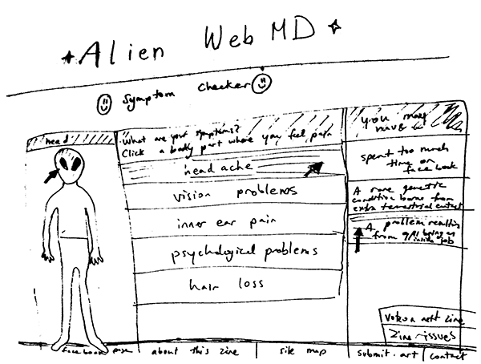
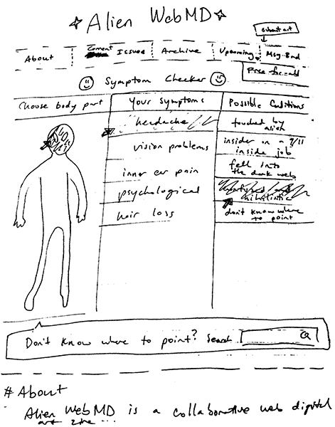
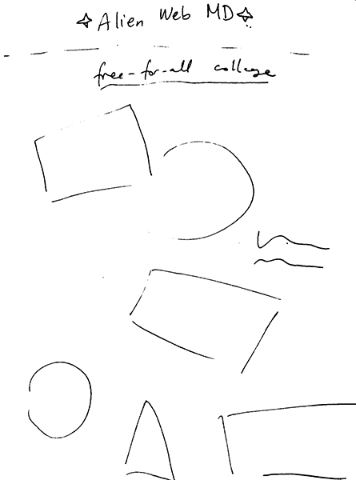
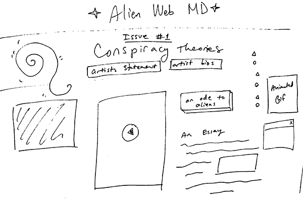

paper prototype #1
My first prototype shows the clickthorugh navigation on the homepage on AlienWeb MD. It pays homage to the zine title, which would hopefully creatively get users' feet wet in the exploration of the site.
paper prototype #2
My second iteration expands on the first by showing some of the click through resulting links (a zine issue and a free-for-all collage). I also added a top navigation, a search bar, and the main info anchor linking to the homepage.
  